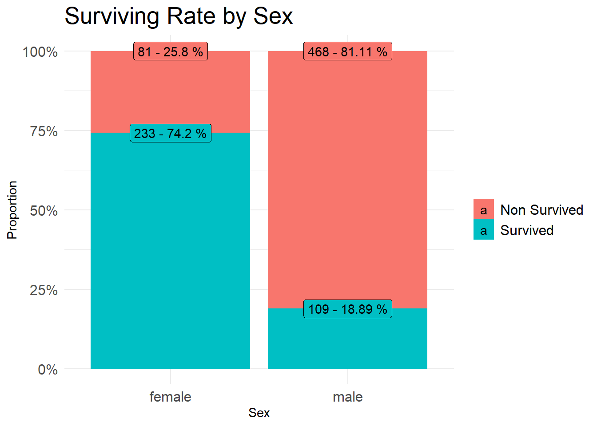
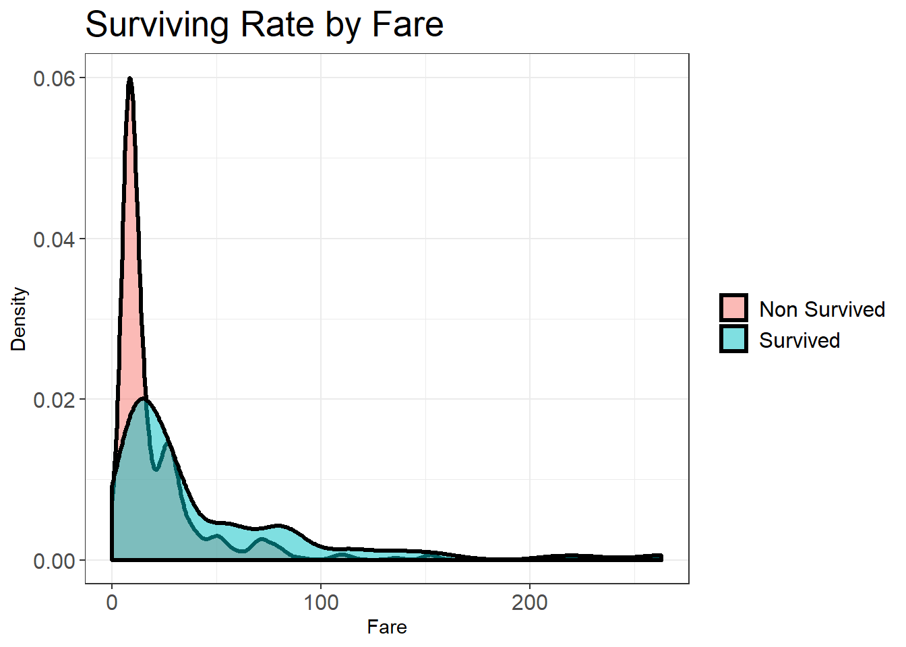

XGBoost is a machine learning technique for both regression and classification problems. It consists of an ensemble of sequential simple decision trees to generalize the final result of them by a LOSS function.
This method gained in popularity the last few years, being the most used method along with the LightGBM technique.
There are a lot of things to take into consideration when tunning this model. While bagging techniques create weak decision trees and then they calculate the average between them, when using a boosting technique like XGBoost around 5 nodes of decision trees are created and then the algorithm calculates a rolling average from one to the following. One of the pros of this is that the learning curve is smoother compared to bagging models, so the model can steadily learn from the errors, trying at every loop to minimize the MSE LOSS function, and thus avoiding overfitting more efficiently.
# Load required libraries
library(tidyverse)
library(data.table)
library(magrittr)
library(ggridges)
library(xgboost)
library(rpart)
library(gridExtra)
library(vtreat)
# Load databases
train <- fread('/Users/hp/Documents/GitHub/dvalls/archives/titanic_train.csv')
test <- fread('/Users/hp/Documents/GitHub/dvalls/archives/titanic_test.csv')# Combine both datasets
test$Survived <- NA
train2 <- rbind(train, test)
# Simplifying the titles to reduce noise
train2$Title <- sapply(train2$Name, function(x) {strsplit(x, split = '[,.]')[[1]][[2]]})
train2$Title <- trimws(train2$Title, 'left')
train2$Title[train2$Title %in% c('Mme', 'Mlle')] <- 'Mlle'
train2$Title[train2$Title %in% c('Capt', 'Don', 'Major', 'Sir')] <- 'Sir'
train2$Title[train2$Title %in% c('Dona', 'Lady', 'the Countess', 'Jonkheer')] <- 'Lady'
train2$Title <- factor(train2$Title)
# Creating a family size variable
train2 %<>%
mutate(family_size = SibSp + Parch + 1)
# Imputing values to the missing values
fit_age <- rpart(Age ~ Sex + Pclass + Fare + Embarked + Title, data = train2)
train2$Age[is.na(train2$Age)] <- predict(fit_age, newdata = train2[is.na(train2$Age),])
# Fill gaps in Embarked and Fare
train2$Embarked <- ifelse(train2$Embarked == '', 'S', train2$Embarked) %>% as.factor()
fare_fit <- rpart(Fare ~ Age + Sex + Pclass + Embarked + Title, data = train2)
train2$Fare[is.na(train2$Fare)] <- predict(fare_fit, newdata = train2[is.na(train2$Fare),])
# All the missing values are now filled and the dataset is ready to be trained
summary(train2)## PassengerId Survived Pclass Name
## Min. : 1 Min. :0.0000 Min. :1.000 Length:1309
## 1st Qu.: 328 1st Qu.:0.0000 1st Qu.:2.000 Class :character
## Median : 655 Median :0.0000 Median :3.000 Mode :character
## Mean : 655 Mean :0.3838 Mean :2.295
## 3rd Qu.: 982 3rd Qu.:1.0000 3rd Qu.:3.000
## Max. :1309 Max. :1.0000 Max. :3.000
## NA's :418
## Sex Age SibSp Parch
## Length:1309 Min. : 0.17 Min. :0.0000 Min. :0.000
## Class :character 1st Qu.:22.00 1st Qu.:0.0000 1st Qu.:0.000
## Mode :character Median :28.86 Median :0.0000 Median :0.000
## Mean :29.59 Mean :0.4989 Mean :0.385
## 3rd Qu.:36.50 3rd Qu.:1.0000 3rd Qu.:0.000
## Max. :80.00 Max. :8.0000 Max. :9.000
##
## Ticket Fare Cabin Embarked
## Length:1309 Min. : 0.000 Length:1309 C:270
## Class :character 1st Qu.: 7.896 Class :character Q:123
## Mode :character Median : 14.454 Mode :character S:916
## Mean : 33.282
## 3rd Qu.: 31.275
## Max. :512.329
##
## Title family_size
## Mr :757 Min. : 1.000
## Miss :260 1st Qu.: 1.000
## Mrs :197 Median : 1.000
## Master : 61 Mean : 1.884
## Dr : 8 3rd Qu.: 2.000
## Rev : 8 Max. :11.000
## (Other): 18# Pick just the interesting columns
train3 <- train2[, c(2, 3, 5, 6, 7, 8, 10, 12, 13, 14)]
# Divide back to train/test split
train_m <- train3[!is.na(train3$Survived),]
test_m <- train3[is.na(train3$Survived),]# Let's predict survivors
# Surviving Rate By Sex
train %>%
group_by(Sex) %>%
summarise(total = n(),
survived = sum(Survived),
non_survived = sum(ifelse(Survived == 1, 0, 1))) %>%
gather(key, num, survived, non_survived) %>%
mutate(prop = num / total) %>%
ggplot(aes(x = Sex, y = num, fill = key)) +
geom_col(position='fill') +
geom_label(aes(label = paste(num, '-', round(prop * 100, 2), '%')),
position = 'fill') +
labs(x = 'Sex', y = 'Proportion', fill = '') +
theme_minimal() +
theme(axis.text = element_text(size = 12),
plot.title = element_text(size = 20),
legend.text = element_text(size = 12)) +
scale_y_continuous(breaks = c(0, .25, .5, .75, 1),
labels = c('0%', '25%', '50%', '75%', '100%')) +
scale_fill_discrete(labels = c("Non Survived", "Survived")) +
ggtitle('Surviving Rate by Sex')
# Surviving by Fare
train %>%
filter(Fare < 300) %>%
ggplot(aes(x = Fare)) +
geom_density(aes(fill = factor(Survived)), alpha = .5, size = 1.2) +
theme_bw() +
theme(axis.text = element_text(size = 12),
plot.title = element_text(size = 20),
legend.title = element_blank(),
legend.text = element_text(size = 12)) +
labs(x = 'Fare', y = 'Density') +
scale_fill_discrete(labels = c("Non Survived", "Survived")) +
ggtitle('Surviving Rate by Fare')
set.seed(123)
# Create the tunning grid
hyper_grid <- expand.grid(
eta = c(.05, .1, .2, .3),
gamma = c(.5, 1, 1.2, 1.5),
max_depth = c(3, 5, 7, 9),
min_child_weight = c(1, 3, 5, 7),
subsample = c(.5, .65, .8, 1),
colsample_bytree = c(.7, .8, .9, 1),
#optimal_trees = 0,
test_error_mean = 0
)
nrow(hyper_grid)## [1] 4096There are 4096 possible model combinations. That’s gonna take a bit to run…
Now all we need is to create a for loop to iterate every possible combination of the previous grid.
That took well over 1 hour to run on my laptop. Now let’s take a look at the best parameter combination to fit our predictive model.
# Definitive model picking the best parameters
params_final <- list(
eta = 0.05,
gamma = 1.5,
max_depth = 5,
min_child_weight = 1,
subsample = 0.8,
colsample_bytree = .9
)
xgb.fit <- xgb.cv(
params = params_final,
data = data.matrix(train_m[,-1]),
label = train_m[,1],
nrounds = 500,
nfold = 5,
objective = 'binary:logistic',
#verbose = 0,
early_stopping_rounds = 10,
print_every_n = 100
)## Warning in data.matrix(train_m[, -1]): NAs introduced by coercion## [1] train-error:0.171157+0.034002 test-error:0.200982+0.025079
## Multiple eval metrics are present. Will use test_error for early stopping.
## Will train until test_error hasn't improved in 10 rounds.
##
## Stopping. Best iteration:
## [12] train-error:0.134682+0.004120 test-error:0.171711+0.023642# Train error: 0.13, test error: 0.17Copyright © 2019 David Valls Lanaquera All rights reserved